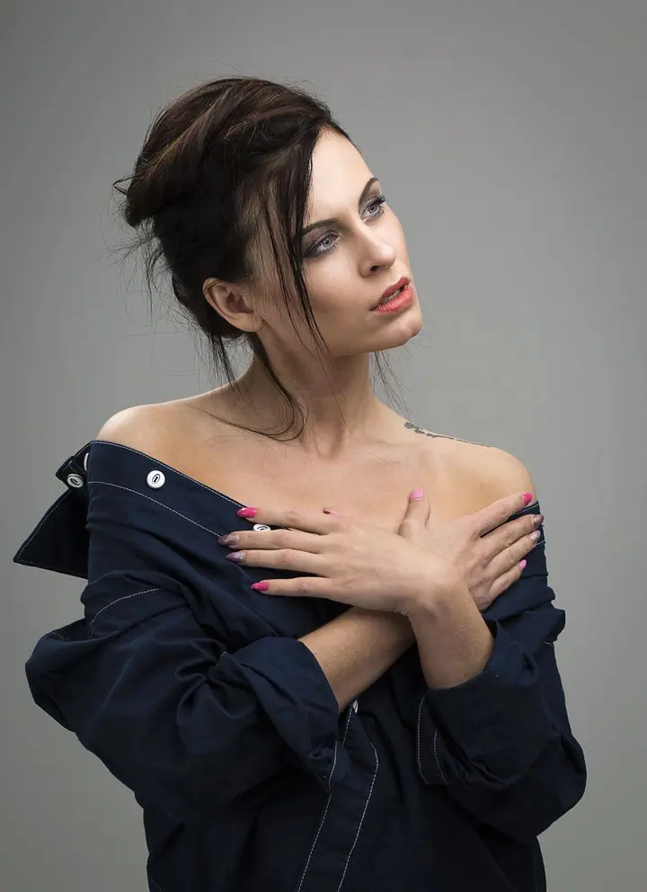
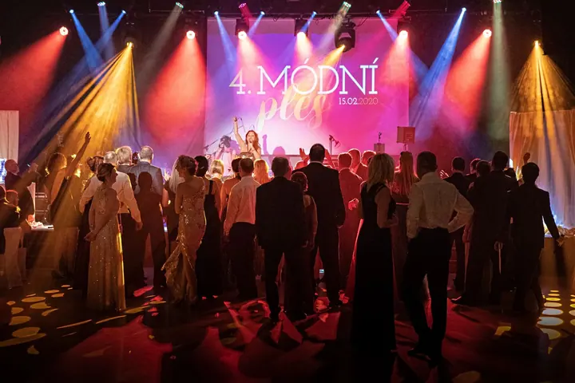

01 / 04
Svatební fotografie
Svatby jsou moje srdcová záležitost. Fotím hlavně na Ostravsku a po celé severní Moravě, ke klasické reportáži nabízím i asistovaný fotokoutek, MobilPrint nebo QR PhotoBook.
Zeptat se na termín→





Svatby, rodiny a portréty z vlastního ateliéru
Zeptat se na termín →(01) Ahoj
Jmenuji se Daniel Kopečný a pod značkou FotoHome fotím svatby , rodiny s dětmi i portréty v Havířově, Ostravě a po celé severní Moravě. Fotografování je pro mě práce i koníček zároveň.
100nafocených svateb
(02) Co fotím
01 / 04
Svatby jsou moje srdcová záležitost. Fotím hlavně na Ostravsku a po celé severní Moravě, ke klasické reportáži nabízím i asistovaný fotokoutek, MobilPrint nebo QR PhotoBook.
Zeptat se na termín→02 / 04
Rodinné, těhotenské, párové i dětské focení ve vlastním ateliéru v Havířově nebo venku v přírodě. Za 1 500 Kč dostanete 5 upravených fotografií v plném rozlišení a ateliér je v ceně.
Zeptat se na termín→03 / 04
Business portrét v ateliéru s detailní retuší za 1 000 Kč. Pro odvážnější nápady fotím i MetallicBody, fashion, glamour nebo akt, téma a styling si domluvíme.
Zeptat se na termín→Dále nabízím
Fotím firemní večírky, konference, koncerty, plesy i rodinné oslavy, snímky můžete hned použít na web nebo sociální sítě. Na akce přivezu i asistovaný fotokoutek s neomezeným tiskem fotografií 10×15 cm.
↗(03) Portfolio
Kliknutím fotku zvětšíte · fotografie jsou ilustrační
(04) Postup
Od první zprávy po hotovou galerii.
Krok 1 z 4
Napište mi přes formulář nebo e-mail, případně zavolejte. Jakmile se domluvíme, termín pro vás závazně zablokuji.
Krok 2 z 4
Focení v ateliéru trvá obvykle 45 až 90 minut, venku 45 až 120 minut. Svatbu fotím od 2 hodin až po celý den.
Krok 3 z 4
Náhledy máte do 24 hodin v chráněné sekci na fotozakazky.cz. Tam si vyberete fotky, které vám upravím.
Krok 4 z 4
Upravené fotografie dostanete digitálně v plném rozlišení do 3 až 4 týdnů od výběru. Svatební galerii dodávám do 4 až 6 týdnů, za příplatek i expres do 72 hodin.

Od svatebního dne po první rodinné portréty
(05) Za objektivem
Zaměřuji se na svatební, rodinnou a portrétní fotografii. Fotím venku v přírodě i ve vlastním, profesionálně vybaveném ateliéru v Havířově, kam své klienty zvu. Ateliér je pro ně v ceně focení, žádné příplatky za pronájem neplatíte.
Svatby jsou moje srdcová záležitost a mám jich za sebou více než 200. Fotím hlavně na Ostravsku, v Opavě, Karviné, Frýdku-Místku nebo Třinci, ale rád přijedu kamkoliv po republice. Kromě svateb fotím i plesy, firemní akce, produkty pro e-shopy a nemovitosti.
Záleží mi na tom, aby se u mě každý cítil přirozeně a aby fotky ukazovaly skutečné emoce, ne jen pózování před objektivem. A protože mě fotografie pořád baví, předávám zkušenosti dál na workshopech a fotokurzech.
Daniel
Daniel Kopečný · Svatební, rodinný a portrétní fotograf
Ne, ateliér je můj vlastní a jeho použití je v ceně focení. Platíte jen samotné focení.
Podle délky focení a programu dne přibližně 150 až 600 upravených fotografií v digitální galerii.
Co nejdříve. V hlavní sezóně od května do října se termíny obsazují velmi rychle.
Ano, po celé republice i v zahraničí. V Havířově a blízkém okolí je doprava zdarma, jinak účtuji 8 Kč za kilometr.
Bohužel ne, ateliér je v prvním patře bez výtahu. Když mi dáte vědět předem, rád pro vás najdu jiné řešení.
(07) Kontakt
Napište pár vět o tom, co si představujete, a termín, který se vám hodí.